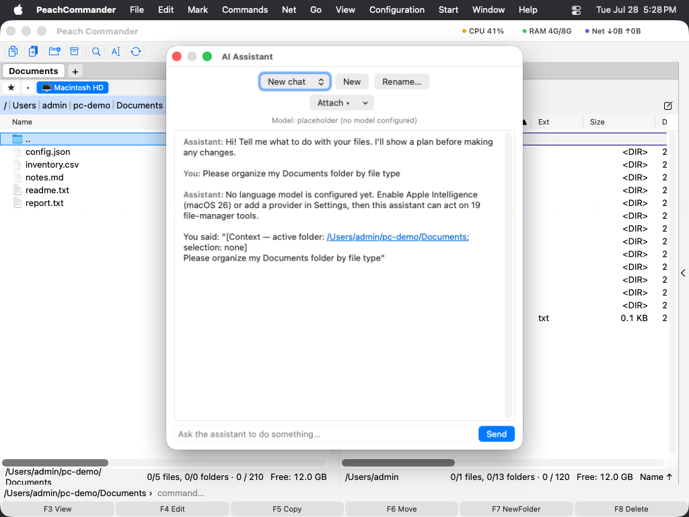

Asistente de IA
El asistente de IA es un complemento opcional y desinstalable que le ayuda a trabajar con sus archivos en lenguaje natural. Puede resumir o explicar un documento, proponer un nombre de archivo mejor, traducir o revisar un texto, convertir datos en una tabla e incluso ordenar una carpeta — y puede realizar acciones sobre los archivos después de mostrarle antes un plan. Viene como dos complementos: AI On-Device funciona con Apple Intelligence y ofrece las acciones que proponen y aplican, mientras que AI Assistant es el chat y necesita un modelo en la nube. Active uno, o ambos. Llegan desactivados. Actívelos en Configuración ▸ Complementos… y reinicie, o déjelos apagados y no aparecerá nada — ni menú IA ▸, ni chat, ni columna. Es deliberado mientras está en beta: puede renombrar, mover y eliminar archivos y ejecutar órdenes de shell por usted, cada una tras un plan que usted aprueba, y eso es mucho alcance para concederlo por omisión a una función nueva. Sin clave de API todo ocurre en su Mac, así que esto va del alcance y no de datos que salgan de la máquina. El complemento AI Column muestra lo que esas acciones averiguaron — un resumen, un tipo, un tema, una fecha — como columnas del panel; no arranca ningún modelo propio. Llega apagado junto a ellos y sigue siendo opcional, y no muestra nada hasta que lo active y añada una de sus columnas. Desde la misma página también puede eliminar cualquiera de los dos por completo.
En el dispositivo o en la nube. El modelo local es privado y gratuito, y es pequeño: admite unos pocos miles de palabras a la vez. Leer un archivo largo entero funciona por tanto de otro modo — el asistente lo lee por tramos y va uniendo los resultados, lo que tarda más cuanto más largo es el archivo. Para trabajo pesado sobre muchos archivos, o para conversaciones largas, un modelo en la nube es más rápido y retiene más de una vez. Las acciones del menú contextual se ejecutan siempre en su Mac; el chat es la mitad que quiere un punto de conexión, y Ajustes ▸ IA es donde le da uno.
Abrir el asistente
Elija Comandos ▸ Asistente de IA para mostrar el asistente en un panel acoplado a la derecha de la ventana. Escriba una petición y pulse Intro; el asistente puede leer archivos, consultar cosas y — con su confirmación — hacer cambios.

(Figura: el asistente de IA, acoplado a la derecha, trabajando en una petición.)Acciones del menú contextual (IA ▸)
La forma más rápida de usar el asistente es el submenú IA ▸ del menú contextual:
- Sobre un archivo — Resumir, Explicar, Clasificar, Proponer un nombre, Proponer un comentario, Traducir al inglés, Revisar, Detectar tareas y Crear una tabla.
- Sobre el fondo del panel — Ordenar esta carpeta, Buscar por significado y Buscar duplicados probables.
Resumir, Explicar, Clasificar, Proponer un nombre, Proponer un comentario, Crear una tabla y Ordenar esta carpeta vienen del complemento AI On-Device y hacen su trabajo sin abrir ningún chat — también sobre un escaneo o una captura de pantalla, porque primero se leen las palabras de la imagen: muestran su propuesta en una hoja, usted desmarca lo que quiera dejar como está, y nada cambia en el disco hasta que lo apruebe. Las demás acciones pertenecen al complemento AI Assistant y abren su propio chat con título (por ejemplo, Traducir – informe.txt), de modo que tareas distintas quedan separadas en vez de amontonarse en una única conversación larga. Cuando escribe usted mismo en el campo de entrada, esa petición continúa el chat actual.
Varios archivos a la vez. Marque una selección y la acción se ejecuta sobre cada archivo marcado, uno tras otro. Las acciones que usan una hoja muestran allí su avance y Cancelar se detiene entre archivos; las que abren un chat ponen el avance en la barra de estado, donde Detener hace lo mismo. En ambos casos puede mirar los primeros resultados y detenerlo.
Proponer un nombre termina en un botón y no en una frase: el nombre propuesto aparece en una barra bajo la conversación, con un botón Renombrar al lado. Pulsarlo es la aprobación — no se le pregunta dos veces. Clasificar termina con una oferta propia: Archivar en carpetas… propone un destino para cada archivo que acaba de clasificar — una carpeta con el nombre de su tipo, y debajo un año cuando el documento indica una fecha — y no mueve nada hasta que apruebe la lista. Cada fila indica el tema encontrado, de modo que un tipo demasiado amplio se ve antes de que se archive nada. Deshacer recupera una carpeta de destino cada vez.
Sus propias formulaciones
Lo que cada acción le pide al modelo es un archivo de texto que puede editar: aichat/skills.json para las acciones sobre archivos y aichat/folder-skills.json para las de carpeta, en su carpeta de configuración. Ambos se escriben con las formulaciones integradas la primera vez que se ejecuta el asistente, para que vea el formato. {name} y {path} representan el archivo. Elimine un archivo para volver a las formulaciones originales.
Acciones propias. Añada una entrada con un id de su elección, y podrá ejecutarse como cualquier otra orden nombrando plugin.ai.skill.<id> — en el menú de usuario, en la barra de botones o en un atajo de teclado. (Para una acción de carpeta, plugin.ai.folderskill.<id>.) El submenú IA ▸ solo lista las acciones integradas: se construye a partir del manifiesto del complemento sin cargarlo, de modo que un complemento desactivado no aporte nada — y por eso sus propias acciones las coloca usted en vez de aparecer ahí. Nombre un id que no existe y el asistente se lo dice en lugar de no hacer nada.
Pedirle que encuentre un archivo
No hace falta que sepa dónde está un archivo. Descríbalo y el asistente lo busca en el índice que macOS ya mantiene de su disco — así que no hay nada que construir ni que esperar a que se ponga al día.
- «Encuentra la factura en PDF del mes pasado» — un tipo, una palabra en el nombre y una ventana de tiempo.
- «¿Dónde están todas mis carpetas node_modules?» — carpetas, por nombre, en cualquier lugar de su carpeta personal.
- «¿Qué archivo menciona el contrato de Aquisgrán?» — palabras dentro de los archivos, algo que la búsqueda Buscar archivos normal no puede hacer si antes no le indica una carpeta.
Puede dirigir dónde busca: su carpeta personal por omisión, el ordenador entero, o solo la carpeta que muestra un panel. Le dice cuál de ellos usó, de manera que una respuesta vacía se lea en vez de parecer un encogimiento de hombros.
Dos límites que conviene conocer. macOS mantiene algunos lugares fuera de su índice — y fuera del alcance de cualquier aplicación sin Acceso completo al disco — así que «no se encontró nada» no prueba que un archivo no exista; véase Resolución de problemas. Y un archivo recién creado puede no estar indexado todavía, en cuyo caso Buscar archivos (Alt+F7), que recorre las carpetas por sí mismo, lo encontrará igualmente.
Gestionar los chats
- Use el selector de chats en la parte superior del panel para moverse entre conversaciones.
- El menú Eliminar ▾ ofrece Eliminar este chat y Eliminar todos los chats, para vaciarlo todo de una vez cuando la lista se alarga. Los chats vacíos se limpian automáticamente al cerrar el panel.
Los cambios se confirman primero
Para cualquier cosa que modifique archivos — mover, renombrar, escribir, eliminar — el asistente muestra un plan y espera su confirmación antes de actuar. Puede cambiarlo en los Ajustes subiendo la autonomía del asistente, o bajarla a solo lectura para que nunca modifique nada. Una copia o un movimiento se informa como hecho cuando lo está: el asistente espera a que termine la transferencia, y puede seguirla en el Gestor de transferencias como cualquier otra operación.
Puede aprobar solo una parte de un plan. Cuando un plan abarca varios archivos — renombrar una carpeta entera, vaciar sus Descargas — cada uno aparece como una línea marcada encima de los botones. Desmarque los que quiera dejar en paz y pulse Confirmar y ejecutar: el resto sigue adelante, y lo que desmarcó no se toca. Desmarcarlo todo equivale a cancelar, y el asistente lo dice en vez de informar de que no hizo nada. Un plan que es una sola acción no tiene lista, porque Confirmar y Cancelar ya le dicen sí y no.
Lo que hizo el asistente, y cómo deshacerlo
Acciones ▾ en el chat tiene dos entradas:
- Mostrar lo que hizo el asistente… lista cada cambio, el más reciente primero, con lo que se le pidió y cómo salió — incluidos los intentos que el ajuste de autonomía rechazó. Un agente externo conectado por MCP figura en la misma lista.
- Deshacer el último cambio retira el cambio más reciente que tenga inverso: un renombrado se renombra de vuelta, un movimiento se mueve de vuelta. Donde nada puede retirarse, la lista dice por qué — un archivo sobrescrito no se guardó en ninguna parte, y los elementos de la Papelera se restauran desde el Finder.
También puede pedirlo sin más: «deshaz eso» y «¿qué has cambiado?» llegan a esas mismas dos funciones.
Esa lista es también el origen de una macro: Configuración ▸ Macro a partir de acciones recientes… ofrece lo que el asistente acaba de hacer como los pasos de una que puedes volver a ejecutar, desde un botón o una tecla. Consulta Macros.
Columnas del panel
Lo que las acciones averiguaron está disponible como columnas. Añádalas desde el editor de conjuntos de columnas: Resumen IA muestra la primera línea de un resumen, y Tipo IA, Tema IA y Fecha IA muestran lo que Clasificar sacó de un archivo — con esos nombres en español, traducidos en cada idioma. Cada una queda vacía hasta que una acción haya leído ese archivo — estas columnas muestran trabajo ya hecho y nunca arrancan el modelo por su cuenta. Idioma, en el mismo complemento, detecta en qué idioma está escrito un archivo de texto, sin modelo alguno.
Esas mismas tres son marcadores de renombrado. [=ai_column.ai_topic]-[Y]-[M].[E] en el diálogo de renombrado múltiple (Ctrl+M) da a una carpeta de archivos dokument1.pdf el nombre de lo que son: para eso no se construyó nada, porque la máscara de renombrado siempre ha resuelto [=provider.field] a través del sistema de columnas. Clasifique primero, renombre después. El encabezado sigue su idioma; el ai_column.ai_topic dentro de la máscara no — así que una máscara sigue funcionando si cambia de idioma.
Ajustes
Abra Configuración ▸ Ajustes ▸ IA para configurar el asistente en una sola página:
- Modelo del chat — sobre qué funciona el chat AI Assistant. Desde que las acciones locales pasaron a ser su propio complemento hay dos respuestas, no tres: El punto de conexión en la nube de abajo, si ha indicado uno, o Nada — dejar el trabajo al complemento AI On-Device. La página está agrupada del mismo modo: primero los ajustes del chat, y debajo lo que cualquiera de las dos mitades puede hacer.
- Punto de conexión en la nube, modelo y clave de API — para usar un modelo compatible con OpenAI en lugar del local. La clave se guarda en el llavero de macOS, nunca en sus archivos de configuración.
- Autonomía del asistente — solo lectura, confirmar cambios (lo predeterminado) o autónomo.
- Prompt de sistema personalizado — instrucciones opcionales que dan forma a cómo responde el asistente.
- Servidor MCP — un servidor opcional, solo local, que permite a un agente externo manejar la aplicación; desactivado por omisión y protegible con un token.
 (Figura: todas las opciones del asistente viven en una sola página IA de los Ajustes.)
(Figura: todas las opciones del asistente viven en una sola página IA de los Ajustes.)
Privacidad
- Con Apple Intelligence el asistente funciona en su Mac; nada sale del dispositivo.
- Un modelo en la nube se usa solo si usted configura uno, y su clave de API se queda en el llavero.
- Las acciones que modifican archivos se confirman antes de ejecutarse, salvo que suba deliberadamente el nivel de autonomía.